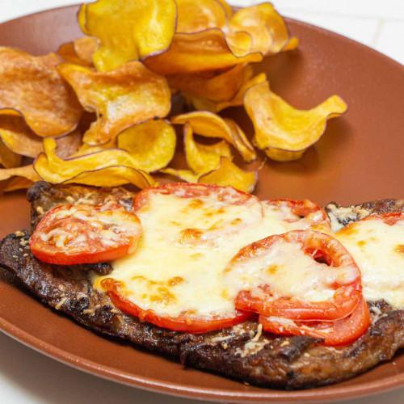

Carne
Matambre
Receta de Cocineros Argentinos
INGREDIENTES:
- 1 matambre
- 1lt de leche
- Condimento vacuno sal pimienta nuez moscada y ajo
- 200 gr de manteca
- 50 gr de pasta ajo negro o 10 dientes de ajo negro
- 15 nuez pecan
- Leche c/n
- 250 gr de panceta Ahumada
- Aceite oliva
- Sal
- 250 gr de tomate
- 500 gr de Muzzarella
- Orégano
- 200 gr de papines
- Un atado rucula
- 500gr de batata
- 1 Lt de aceite para freír
Guarnición:
PROCEDIMIENTO:
Comparsa de matambres:
- Colocar el matambre en la leche con un poco de agua hasta cubrirlo.
- Sumarle unas hojas de laurel.
- Cuando este tierno, retirarlo y dejar enfriar.
- El matambre ya tiernizado, lo cortamos en tres pedazos.
El primer tercio será de “Queso azul y ajo Negro”:
- Reducir la crema de ajo negro con manteca y luego agregamos un trozo 200 gr de queso azul.
- Tostamos unas 15 nuez pecan para terminar el plato.
- Guarnición papines en un colchón de rucula.
El segundo tercio de matambre será “Al verdeo con panceta Ahumada”:
- Caramelizar la panceta
- Levantar el fondo de cocción con el tronco del verdeo y dejar las hojas para agregar a lo último y tener diferentes texturas.
El tercer tercio de matambre será “A la pizza”:
- Servir con rodajas de tomate redondo y muzzarella.
- Guarnición: chip de batatas
